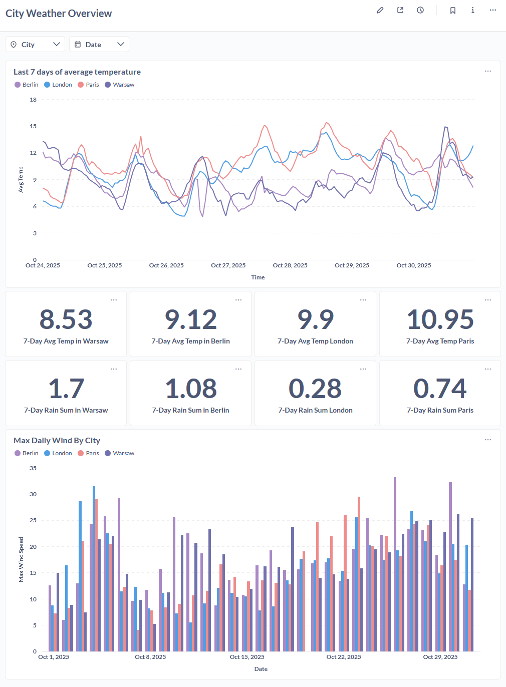

OpenMeteo Weather ETL
End-to-end data engineering pipeline demonstrating modern ELT patterns, automated quality checks, and real-time orchestration. Built with industry-standard open-source tools.
 Project Highlights
Project Highlights
Production-Grade ELT
Implements Extract-Load-Transform pattern with raw data lake, staging layer, and analytical marts following dimensional modeling.
Automated Quality Gates
Great Expectations validates every batch before loading, preventing bad data from corrupting the warehouse with schema and range checks.
Incremental Processing
Watermark-based ingestion fetches only new data, optimizing API usage and processing time while maintaining data freshness.
Airflow Orchestration
DAG-based workflow runs hourly, handling retries, dependencies, and monitoring. Fully containerized for reproducible deployments.
dbt Transformations
SQL-based transformations with built-in testing, documentation, and lineage tracking. Separates business logic from infrastructure.
BI-Ready Outputs
Metabase dashboards provide self-service analytics with filters and drill-downs. Daily aggregations optimized for query performance.
 Live Dashboard
Live Dashboard

Interactive Metabase dashboard featuring:
- Multi-city temperature comparison with time-series visualization
- Daily aggregations (min, max, avg temperature)
- Date range filters for custom analysis
- Responsive design for mobile and desktop
 Architecture
Architecture
The pipeline follows a modern medallion architecture with separation of concerns:
flowchart TB
subgraph API["Data Source"]
A[Open-Meteo API<br/>Weather Data]
end
subgraph Storage["Raw Data Lake"]
B[MinIO S3<br/>Partitioned by Date/Hour]
end
subgraph Quality["Quality Gate"]
F[Great Expectations<br/>Schema & Range Validation]
end
subgraph Database["Data Warehouse"]
C[PostgreSQL Staging<br/>staging.weather_hourly]
D[dbt Marts<br/>fct_city_day]
end
subgraph BI["Analytics Layer"]
E[Metabase Dashboards<br/>Self-Service BI]
end
subgraph Orchestration["Workflow Management"]
G[Apache Airflow<br/>Hourly Scheduling]
end
A -->|Extract| B
B -->|Validate| F
F -->|Pass| C
C -->|Transform| D
D -->|Visualize| E
G -.->|Orchestrates| A
G -.->|Orchestrates| B
G -.->|Orchestrates| F
G -.->|Orchestrates| C
G -.->|Orchestrates| D
style A fill:#1e2542,stroke:#00d4ff
style B fill:#1e2542,stroke:#00d4ff
style C fill:#1e2542,stroke:#00d4ff
style D fill:#1e2542,stroke:#00d4ff
style E fill:#1e2542,stroke:#00d4ff
style F fill:#1e2542,stroke:#00d4ff
style G fill:#1e2542,stroke:#00d4ffKey Design Decisions:
- Raw Data Persistence: All source data stored in MinIO for reprocessability and audit trails
- Quality-First: Validation happens before database insertion, maintaining data integrity
- Idempotent Operations: Upsert logic allows safe pipeline reruns without data duplication
- Incremental Processing: Only fetches data after last successful load timestamp
 Tech Stack
Tech Stack
Python 3.9+
Core Language
PostgreSQL 16
OLAP Database
Apache Airflow 2.9+
Orchestration
dbt Core 1.7+
Transformations
Great Expectations
Data Quality
MinIO
S3-Compatible Storage
Metabase
BI & Dashboards
Docker Compose
Infrastructure
Open Source Stack
This entire stack runs on open-source tools. No cloud dependencies, fully containerized and reproducible.
 Key Metrics
Key Metrics
8 Tech Stack
Hourly Pipeline Runs
100% Validated Data
4 Cities Tracked
 What Makes This Project Stand Out
What Makes This Project Stand Out
Industry Best Practices
- Version Control: All code, SQL, and configurations in Git
- Testing: dbt tests validate data transformations automatically
- Documentation: Self-documenting dbt models with descriptions
- CI/CD Ready: Structured for deployment to production environments
- Monitoring: Airflow tracks task success/failure with alerting capability
- Scalability: Partition-based storage supports growing data volumes
Technical Highlights
- Incremental Processing: Watermark-based ingestion minimizes API calls and processing time
- Data Quality Gates: Validation prevents corrupted data from reaching the warehouse
- Idempotent Design: Pipeline can be safely rerun without data duplication
- Raw Data Persistence: Complete audit trail maintained in object storage
- Dimensional Modeling: Fact and dimension tables optimized for analytical queries
- Container Orchestration: Multi-service stack managed with Docker Compose